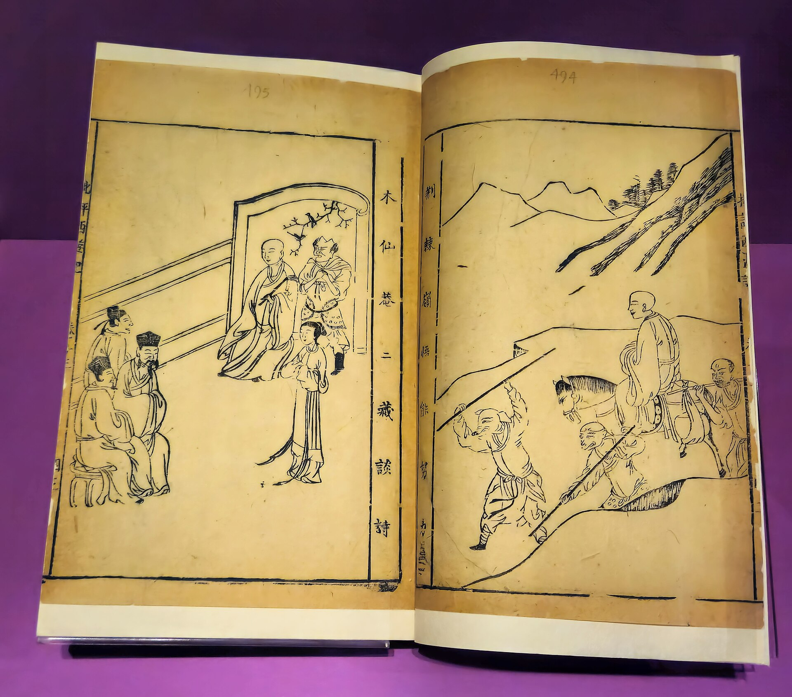
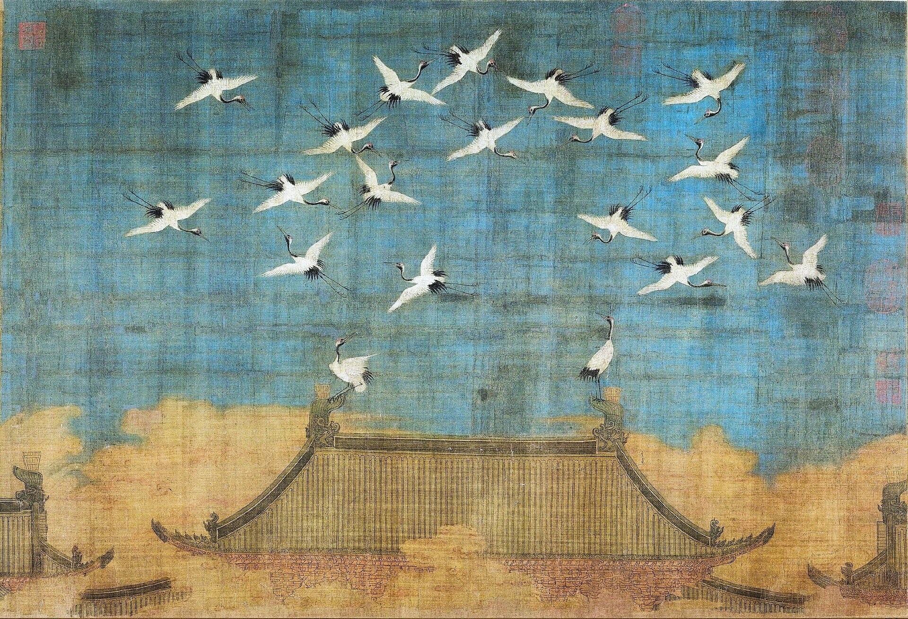
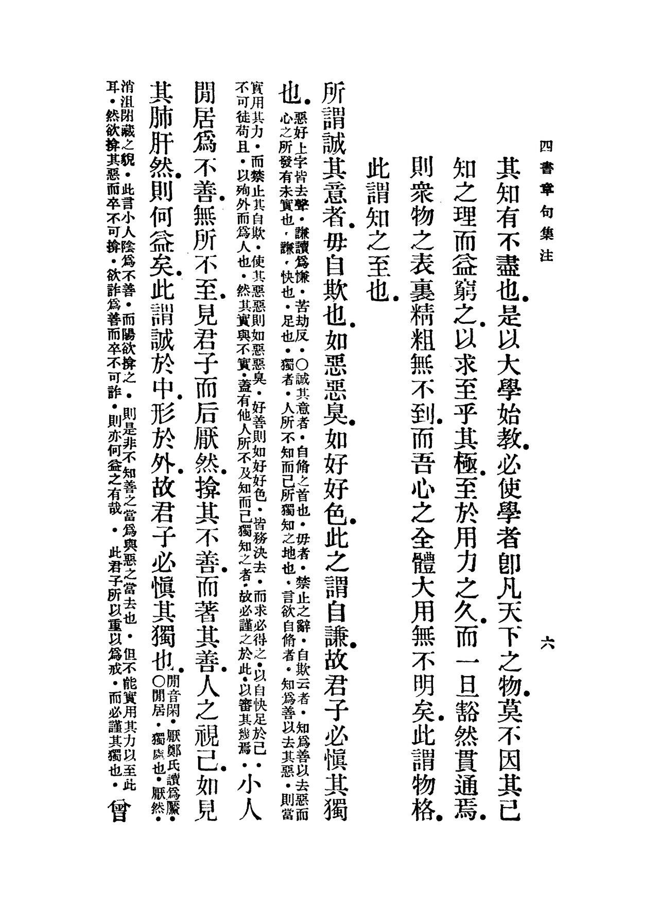

동양의 르네상스
空에서 理로 — 경전주소에서 성리학까지
文藝復興, 송나라에서 다시 피어나다
興

매일 쓰는 그 말들,
어디서 왔을까?
- 工夫매일 하는 ‘공부’, 원래는 무슨 공부였을까?
- 悟空손오공(孫悟空) — 이름에 숨은 뜻은?
- ?물리 · 이성 · 심리 · 논리에 모두 들어 있는 글자는?
- ₩1000원 · 5000원권 속 두 사람의 공통점은?
- 復興‘르네상스’를 한자로 쓰면?

Renaissance = 프랑스어로 ‘다시 태어남’
가운데 두 사람이 고대 그리스의 플라톤과 아리스토텔레스
復 다시 부 · 회복할 복 興 일 흥
통로 가운데 방(집) 아래에 아래로 향한 발
→ 나갔던 발이 집으로 되돌아오다
네 손이 함께
들것(쟁반)을
들어 올리는 모습
→ 일으키다 · 일어나다
동양에도
르네상스가 있었다
송(宋)나라 960–1279
- 印인쇄의 시대 — 책을 목판으로 대량으로 찍고, 활자까지 발명
- 市상업 도시 — 수도 개봉은 밤에도 시장이 열리던 거대 도시
- 士선비의 나라 — 과거 시험으로 뽑힌 사대부가 나라를 이끔
- 古고전으로 돌아가자 — 공자 · 맹자의 원래 가르침을 다시 읽자
무엇이 쓰러졌다가 다시 일어났을까?
敎

낡은 교과서
기원전 213년, 진시황의 분서(焚書) — 경전이 불타고 흩어지다
→ 한나라 학자들이 글자 하나하나를 되살리고 풀이하다 = 훈고학(訓詁學) 訓 가르칠 훈 · 詁 옛말 풀 고
經 날 경 · 지날 경 — 베틀의 날실
傳 전할 전 — 돌려 넘겨 전하다
돌리는 모습
같은 ‘경전’, 다른 ‘전’
典 법 전 — 받들어 모신 책
종교 · 성현의 책: 불교 경전, 성경
傳 전할 전 — 경을 풀어 전한 해설
《좌전》 · 《공양전》 · 《곡량전》
注 부을 주 · 疏 트일 소
여기선 소리
(流의 부품)
다시 풀어 트다

《예기주소》 14권 첫 쪽 — 명나라 판본
(일본 국립공문서관)
經傳注疏 = 네 겹의 책
성인의 글 — 큰 글씨 본문
사진: 〈月令〉 편 제목
현인이 經을 풀어 전한 해설
예: 《춘추》의 《좌전》 — 《예기》에는 따로 없음
한나라 정현(鄭玄)이 단 풀이
사진: 漢鄭氏註 “한나라 정씨의 주”
당나라 공영달(孔穎達)이 注를 다시 푼 풀이
사진: 唐孔穎達疏 · 疏 正義曰…
해설지
→ 경전 공부 = 정답 외우기
“애쓰기는 어린이 공부의 두 배인데 쓸모가 없다” — 주희, 《대학장구》 서문

마음의 시대
괴로움에서 벗어나자
신선처럼 오래 살자
글자 풀이로는 답할 수 없던 질문 — 왜 사는가? 죽으면? 마음이란? — 에 답해 준 것은 불교와 도교
배경: 868년 당나라에서 찍은 《금강경》 — 날짜가 남아 있는 가장 오래된 인쇄 책 (영국도서관)

(도쿄국립박물관)

남아 있는 가장 오래된 판본
《서유기》는
언제 만들어졌을까?
→ 불교 · 도교 · 유교가 한데 섞였다
→ 여행기 《대당서역기》
‘원숭이 행자(猴行者)’ 첫 등장
이야기 완성

셋 다 ‘悟’ 돌림자 — 불교식 법명(法名)
→ 經이 또 나왔다!
空 빌 공 — 구멍에서 텅 빔으로
色卽是空 색즉시공 — 눈에 보이는 모든 것(色)은 곧 공(空)이다 《반야심경》
無我 — ‘나’는 없다?
(지난 시간 舞의 그 글자)
→ 소리를 빌려 ‘없다’
→ 소리를 빌려 ‘나’
그림 그대로 읽으면 ‘춤추는 창’?!
→ ‘나’에 대한 집착을 내려놓아라

心 마음 심 — ‘마음 원숭이’ 손오공
심장을 그린 글자 — 옛사람들은 생각과 감정이 심장에서 나온다고 봤다
제7회 제목 “五行山下定心猿” — 오행산 아래 마음 원숭이를 붙잡아 두다
긴고아(緊箍兒): 머리를 조이는 금테
= 날뛰는 마음을 붙잡는 장치
→ 세 가르침이 섞인 마음 수련 이야기

바로 이 문장 (《사서장구집주》)
주희가 본 두 가지 문제 《대학장구》 서문, 1189
其功倍於小學而無用
속된 유학자들의 외우고 글 짓는 공부는 — 애쓰기는 소학의 두 배인데 쓸모가 없고
其高過於大學而無實
이단의 허무 · 적멸의 가르침은 — 높기는 대학보다 높은데 알맹이가 없다
도교 — 텅 비어 없음
억지로 하지 않는 자연
불교 — 고요히 꺼진 열반
점멸(點滅)의 그 滅!
→ ‘정신승리’ 아닌가?

북쪽에서 내려오다
송 = 붓(文)의 나라 · 이 그림 〈서학도〉(1112)를 그린 사람은 황제 휘종 — 그림과 글씨의 천재
1004년 거란(요)과 화친 → 해마다 비단 20만 필 · 은 10만 냥을 바치다
1127년, 이 그림을 그린 휘종과 아들 흠종이 여진에게 포로로 끌려간다
※ 국경은 대략적으로 그린 약도
무너지는 북송
→ 현실의 질서 · 책임 · 명분이 필요하다

(필라델피아 미술관)
다시 유교의 가르침을 살리다
같은 학문, 이름은 일곱
공자 · 맹자의 경전으로 다시 풀었다
性 성품 성 — 태어날 때 받은 마음
새싹

理 다스릴 리 — 옥의 결
“왕이 옥장이에게 그 원석을 다듬게(理) 하니 보물이 나왔다” — 《한비자》 화씨벽 이야기
영원히 변하지 않는 ‘나’는 없다
내 본성(性)이 곧 우주의 이치(理)다
《대학》 — 닦은 나에서 세상으로
氣 기운 기 — 흐르는 구름 기운
퀴즈: 둘 중 ‘기운(气)’은 어느 쪽일까?
위아래를 구부림
설계도 · 규칙
게임이라면 게임 규칙 · 요리라면 레시피
재료 · 에너지
게임이라면 실제 플레이 · 요리라면 재료와 불

작은 두 줄이 주희의 풀이
五經에서 四書로
→ 조선 과거까지 약 600년
格物致知 · 窮理 — 끝까지 파고들다
사물에 다가가 그 이치를 캐면 → 앎에 이른다 《대학》
다다름
주희의 풀이: “格은 이르다(至)” — 사물에 직접 다가간다
窮 다할 궁 — 굴 끝까지 몸이 다다라 더 갈 데가 없다
→ 끝까지 파고들다
서양 학문을 성리학 사전으로 번역하다
두 개의 르네상스
| 서양 르네상스 14–16세기 | 동양의 르네상스 송, 10–13세기 | |
|---|---|---|
| 이전 시대 | 중세 교회 중심의 신학 | 불교 · 도교, 그리고 굳어 버린 훈고학 |
| 돌아간 곳 | 그리스 · 로마 고전 | 공자 · 맹자의 경전 (한유: 옛 문장으로 돌아가자) |
| 새 관심 | 인간 (인문주의) | 인간의 본성(性)과 마음(心) |
| 퍼뜨린 기술 | 구텐베르크의 활판 인쇄 (1450년 무렵) | 목판 인쇄 · 필승의 활자 (1040년대) |
| 무대 | 피렌체 · 베네치아 같은 상업 도시 | 개봉 · 항주 같은 상업 도시 |
| 이끈 사람들 | 인문주의 학자 · 예술가 | 과거 시험으로 뽑힌 사대부 |


(소수서원)
조선은 성리학으로 세운 나라
오늘의 질문 ④ — 둘 다 성리학자!
오늘 배운 한자, 맞혀 볼까?
- Q1
‘르네상스’를 한자로 쓰면?
文藝復興 다시 일으키다 - Q2
經傳注疏에서 疏는 무엇일까?
疏 注를 다시 푼 풀이 - Q3
손오공(孫悟空) 이름의 뜻은?
悟空 공(空)을 깨닫다 - Q4
理의 원래 뜻은? (힌트: 화씨의 구슬)
玉 옥을 결 따라 다듬다
오늘 다시 일으킨 한자
출처 · 참고
- 옛 그림 · 판본
- 곽희 〈조춘도〉(1072) · 장택단 〈청명상하도〉 · 라파엘로 〈아테네 학당〉 · 송 휘종 〈서학도〉(1112) · 《금강경》(868, 영국도서관) · 현장 초상(14세기, 도쿄국립박물관) · 세덕당본 《서유기》(1592) · 18세기 《서유기》 판본 삽화 · 쓰키오카 요시토시 〈달의 백 가지 모습: 옥토끼와 손오공〉 · 주희 초상(《명인 초상》 화첩, 필라델피아 미술관) · 이불해 〈안향 초상〉 · 《예기주소》(일본 국립공문서관) · 《사서장구집주》(CADAL) — 모두 퍼블릭 도메인 (Wikimedia Commons)
- 사진
- Bamboo Slips · Warring States Jade Bi Disc · Shang Tortoise Plastron Oracle Bone — Gary Todd, CC0 · 명륜당 Lecture Hall — Christian Bolz, CC BY-SA 3.0 (모두 Wikimedia Commons)
- 고문자 자형
- Wikimedia Commons — Ancient Chinese characters project의 갑골문 · 금문 · 소전 SVG (퍼블릭 도메인)
- 지도
- 수업용으로 직접 그린 약도 — 국경과 강줄기는 대략적인 위치입니다.
- 참고 자료
- 주희 《대학장구》 서문 · 《한비자》 화씨 편 · 《설문해자》 · 《서유기》 · 宮崎市定 〈東洋のルネッサンスと西洋のルネッサンス〉(《史林》 25-4, 1940) · Wiktionary 한자 항목(复 · 興 · 巠 · 傳 · 專 · 我 · 氣 · 疏) · 漢典(格致)